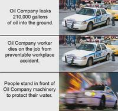

sciencehabit shares a report from Science Magazine: Cold War spies planted bugs in walls, lamps, and telephones. Now, scientists warn, the cables themselves could listen in. A fiber optic technique used to detect earthquakes can also pick up the faint vibrations of nearby speech, researchers reported this week here at the general assembly of the European Geosciences Union. Freely available artificial intelligence (AI) software turned the fiber optic data into intelligible, real-time transcripts. "Not many people realize that [fiber optic cables] can detect acoustic waves," says Jack Lee Smith, a geophysicist at the University of Edinburgh who presented the result. "We show that in almost every case where you use these fibers, this could be a privacy concern."
Fiber optics can pick up on sound through a technique called distributed acoustic sensing (DAS). Using a machine called an interrogator, researchers fire laser pulses down a cable and record the pattern of reflections coming back from tiny glass defects along the length of the fiber optic. When an earthquake's seismic wave crosses a section of the fiber, it stretches and squeezes the defects, leading to shifts in the reflected light that researchers can use to build a picture of an earthquake. DAS essentially turns a fiber cable into a long chain of seismometers that can detect not only earthquakes, but also the rumblings of volcanoes, cars, and college marching bands. And although scientists set up dedicated fiber lines specifically for research, DAS can also be performed on "dark fiber" -- unused strands in the web of fiber optics that runs through cities and across oceans, carrying the world's internet traffic.
DAS can also be used to eavesdrop, the work of Smith and his colleagues shows. They conducted a field test using an existing DAS setup used to study coastal erosion. They set a speaker next to the cable and played pure tones, music, and speech. Human speech contains frequencies ranging from a few hundred to several thousand hertz. The low end of the range could be pulled out of the data "even without any preprocessing," Smith says. "You can easily see acoustic waves." Getting higher frequency speech took a bit of postprocessing, but it was possible. Dumping the data directly into Whisper, a free AI transcription tool, provided accurate real-time transcription. However, this technique worked only for coiled cables, exposed at the surface, at distances of up to 5 meters from the speaker. Burying the cable under just 20 centimeters of dirt was enough to muddy the speech. And straight cables -- even exposed ones right next to the speaker -- did not record speech well.
Read more of this story at Slashdot.
An anonymous reader quotes a report from the Guardian: Walking into Mexico City's sprawling central Zocalo is a dizzying experience. At one end of the plaza, the capital's cathedral, with its soaring spires, slumps in one direction. An attached church, known as the Metropolitan Sanctuary, tilts in the other. The nearby National Palace also seems off-kilter. The teetering of many of the capital's historic buildings is the most visible sign of a phenomenon that has been ongoing for more than a century: Mexico City is sinking at an alarming rate. Now, the metropolis's descent is being tracked in real time thanks to one of the most powerful radar systems ever launched into space. Known as Nisar, the satellite can detect minute changes in Earth's surface, even through thick vegetation or cloud cover. "Nisar takes radar imaging observations of Earth to the next level," said Marin Govorcin, a scientist at Nasa's jet propulsion laboratory. "Nisar will see any change big or small that happens on Earth from week to week. No other imaging mission can claim this."
Though not the first time that Mexico City's sinking has been observed from space, the Nisar mission has provided a greater sense of how far the sinking spreads and how it changes across different types of land than any other space-based sensor. It has also been able to penetrate areas on the outskirts of the city that were previously challenging to study because of the complex terrain. The implications of the imagery extend far beyond the Mexican capital. "This study of Mexico City speaks to the realm of possibilities that will open up thanks to the Nisar system," said Dario Solano-Rojas, an engineer at the National Autonomous University of Mexico (Unam). "And not just for sinking cities but also for studying volcanoes, for studying the deformation associated with earthquakes, for studying landslides." According to Nasa, the technology is also capable of monitoring the climate crisis, glacier sliding, agricultural productivity, soil moisture, forestry, coastal flooding and more. The Nisar system found that some parts of the city are dropping by more than 2cm a month. "First documented in 1925, the city's sinking is a result of centuries of exploitation of the groundwater," the report says. "Because Mexico City and its surrounds were built on an ancient lake bed, the soil beneath the city is extremely soft. When water is pumped out of the aquifer below, this clay-like earth compacts, resulting in a city that is quietly sinking."
The crisis is also self-reinforcing: as the city sinks, aging pipes crack and leak, causing Mexico City to lose an estimated 40% of its water, even as drought and climate change make supplies more fragile.
Read more of this story at Slashdot.
BrianFagioli writes: Micron says it is now shipping the world's highest-capacity commercially available SSD, and the numbers are honestly hard to wrap your head around. The new Micron 6600 ION packs 245TB into a single drive and is aimed squarely at AI infrastructure, hyperscalers, and cloud providers dealing with exploding data growth. According to the company, the SSD can reduce rack counts by 82 percent compared to HDD deployments offering similar raw capacity, while also cutting power usage and cooling requirements. Micron says the drive tops out at roughly 30W, which it claims is about half the power draw of comparable hard drive setups.
The announcement also feels like another warning sign for spinning disks in the enterprise. Hard drives still dominate bulk storage because of lower cost per terabyte, but SSD capacities keep climbing into territory that used to belong exclusively to HDDs. Micron is also touting major performance gains, claiming up to 84 times better energy efficiency for AI workloads and dramatically lower latency versus HDD-based systems. While nobody is dropping one of these into a home NAS anytime soon, the idea of a quarter petabyte on a single SSD no longer sounds like science fiction.
Read more of this story at Slashdot.
mrspoonsi shares a report: Dirty Frag is a vulnerability class, first discovered and reported by Hyunwoo Kim (@v4bel), that can obtain root privileges on major Linux distributions by chaining the xfrm-ESP Page-Cache Write vulnerability and the RxRPC Page-Cache Write vulnerability. Dirty Frag extends the bug class to which Dirty Pipe and Copy Fail belong. Because it is a deterministic logic bug that does not depend on a timing window, no race condition is required, the kernel does not panic when the exploit fails, and the success rate is very high. Because the embargo has been broken, no patch or CVE currently exists. "As with the previous Copy Fail vulnerability, Dirty Frag likewise allows immediate root privilege escalation on all major distributions, and it
chains two separate vulnerabilities," Kim said. Detailed technical information can be found here.
BleepingComputer notes that the two vulnerabilities chained by Dirty Frag are "now tracked under the following CVE IDs: the xfrm-ESP one was assigned CVE-2026-43284, and the RxRPC isye is now CVE-2026-43500."
Read more of this story at Slashdot.
An anonymous reader quotes a report from Wired: Security researcher Dor Zvi and his team at the cybersecurity firm he cofounded, RedAccess, analyzed thousands of vibe-coded web applications created using the AI software development tools Lovable, Replit, Base44, and Netlify and found more than 5,000 of them that had virtually no security or authentication of any kind. Many of these web apps allowed anyone who merely finds their web URL to access the apps and their data. Others had only trivial barriers to that access, such as requiring that a visitor sign in with any email address. Around 40 percent of the apps exposed sensitive data, Zvi says, including medical information, financial data, corporate presentations, and strategy documents, as well as detailed logs of customer conversations with chatbots.
"The end result is that organizations are actually leaking private data through vibe-coding applications," says Zvi. "This is one of the biggest events ever where people are exposing corporate or other sensitive information to anyone in the world." Zvi says RedAccess' scouring for vulnerable web apps was surprisingly easy. Lovable, Replit, Base44, and Netlify all allow users to host their web apps on those AI companies' own domains, rather than the users'. So the researchers used straightforward Google and Bing searches for those AI companies' domains combined with other search terms to identify thousands of apps that had been vibe coded with the companies' tools.
Of the 5,000 AI-coded apps that Zvi says were left publicly accessible to anyone who simply typed their URLs into a browser, he found close to 2,000 that, upon closer inspection, seemed to reveal private data: Screenshots of web apps he shared with WIRED -- several of which WIRED verified were still online and exposed -- showed what appeared to be a hospital's work assignments with the personally identifiable information of doctors, a company's detailed ad purchasing information, what appeared to be another firm's go-to-market strategy presentation, a retailer's full logs of its chatbot's conversations with customers, including the customers' full names and contact information, a shipping firm's cargo records, and assorted sales and financial records from a variety of other companies. In some cases, Zvi says, he found that the exposed apps would have allowed him to gain administrative privileges over systems and even remove other administrators. In the case of Lovable, Zvi says he also found numerous examples of phishing sites that impersonated major corporations, including Bank of America, Costco, FedEx, Trader Joe's, and McDonald's, that appeared to have been created with the AI coding tool and hosted on Lovable's domain. "Anyone from your company at any moment can generate an app, and this is not going through any development cycle or any security check," Zvi says. "People can just start using it in production without asking anyone. And they do."
Read more of this story at Slashdot.
The Pentagon has begun releasing new UFO/UAP files through a newly launched public website, starting with 162 documents from agencies including the FBI, State Department, NASA, and others. Officials say more files will be released on a rolling basis. The Associated Press reports: The Pentagon has begun releasing new files on UFOs, saying members of the public can draw their own conclusions on "unidentified anomalous phenomena" like an object that a drone pilot says shone a bright light in the sky and then vanished. It said in a post on X on Friday that while past administrations sought to discredit or dissuade the American people, President Donald Trump "is focused on providing maximum transparency to the public, who can ultimately make up their own minds about the information contained in these files." It said additional documents will be released on a rolling basis.
Besides the Pentagon, the effort is led by the White House, the director of national intelligence, the Energy Department, NASA and the FBI. A newly unveiled website housing the documents on unidentified anomalous phenomena, or UAPs, has a decidedly retro feel, with black-and-white military imagery of flying objects displayed prominently on the page, with statements displayed in typewriter-like font. The first release includes 162 files, such as old State Department cables, FBI documents and transcripts from NASA of crewed flights into space.
One document details an FBI interview with someone identified as a drone pilot who, in September 2023, reported seeing a "linear object" with a light bright enough to "see bands within the light" in the sky. "The object was visible for five to ten seconds and then the light went out and the object vanished," according to the FBI interview. Another file is a NASA photograph from the Apollo 17 mission in 1972, showing three dots in a triangular formation. The Pentagon says in an accompanying caption that "there is no consensus about the nature of the anomaly" but that a new, preliminary analysis indicated that it could be a "physical object."
Read more of this story at Slashdot.
Apple and Intel have reportedly reached a preliminary agreement (paywalled; alternative source) for Intel to manufacture some chips used in Apple devices, after more than a year of talks and pressure from the Trump administration. It's still unclear which Apple products would use Intel-made chips, but the deal would mark a major potential win for Intel's foundry ambitions and give Apple another manufacturing option beyond TSMC.
Read more of this story at Slashdot.
An anonymous reader quotes a report from 404 Media: Skyrocketing hard drive and storage costs caused by the AI data center boom are making it more expensive and more difficult for digital archivists, academics, Wikipedia, and hobby data hoarders to save data and archive the internet. Specific drives favored by some high profile organizations like the Internet Archive have become far more expensive or are difficult to find at all, archivists said. Over the last several months, prices for both consumer level and enterprise solid state drives, hard drives, and other types of storage have skyrocketed. As an example, a 2TB external Samsung SSD I purchased last fall for $159 now costs $575. PC Part Picker, a website that tracks the average price of different types of drives, shows a universal increase in storage prices starting in about October of last year. Prices of many of the drives it tracks have doubled or increased by more than 150 percent, and at some stores SSDs and hard drives are simply sold out. There is now even a secondary market for some SSDs, with people scalping them on eBay and elsewhere.
Brewster Kahle, founder of the Internet Archive and the Wayback Machine, the most important archiving projects in the history of the internet, told 404 Media that the skyrocketing costs of storage is "a very real issue costing us time and money." "We have found that the preferred 28-30TB drives are just not available or at very high price," Kahle said. "We gather over 100 terabytes of new materials each day, and we have over 210 Petabytes of materials already archived on machines that need continuous upgrades and maintenance, so we need to constantly get new hard drives."
"We are fortunate to have an active community that donates to the Archive, and we are also looking for help from hard drive manufacturers in these difficult times. We are always looking for more help," he added. "So far we have ways to work around these shortages, but it is a very real issue causing us time and money."
The Wikimedia Foundation, which runs Wikipedia and various other projects, including Wikimedia Commons, an open repository of royalty free media, told 404 Media that the cost of storage has become a concern for the foundation's projects as well. "With over 65 million articles on Wikipedia alone, access to server and storage capacity is vital to us. We've certainly seen price increases since the end of 2025. These price increases are of concern to us, as with every other player in the industry. We see the primary impact in the purchase of memory and hard drives but also in terms of lead times on server deliveries and our capacity to place future orders," a Wikimedia Foundation spokesperson told us. "The Wikimedia Foundation is a non-profit, and as such how we allocate budget is very carefully considered. We maintain our own data centers to serve our users from all over the world. We're putting workarounds in place where we can, mainly involving being smart with how we prioritize investment in hardware, building in flexibility as well as extending the life of existing hardware where possible."
Western Digital, one of the largest manufacturers of hard drives and other storage systems, said that it has essentially sold out of its 2026 inventory to enterprise clients, many of which run data centers. Micron, which made RAM and SSDs under the brand name Crucial, has exited the consumer market altogether because "AI-driven growth in the data center has led to a surge in demand for memory and storage. Micron has made the difficult decision to exit the Crucial consumer business in order to improve supply and support for our larger, strategic customers in faster-growing segments."
Read more of this story at Slashdot.
Longtime Slashdot reader couchslug shares a report from That Privacy Guy's Alexander Hanff: Two weeks ago I wrote about Anthropic silently registering a Native Messaging bridge in seven Chromium-based browsers on every machine where Claude Desktop was installed. The pattern was: install on user launch of product A, write configuration into the user's installs of products B, C, D, E, F, G, H without asking. Reach across vendor trust boundaries. No consent dialog. No opt-out UI. Re-installs itself if the user removes it manually, every time Claude Desktop is launched. This week I discovered the same pattern, executed by Google.
Google Chrome is reaching into users' machines and writing a 4GB on-device AI model file to disk without asking. The file is named weights.bin. It lives in OptGuideOnDeviceModel. It is the weights for Gemini Nano, Google's on-device LLM. Chrome did not ask. Chrome does not surface it. If the user deletes it, Chrome re-downloads it. The legal analysis is the same one I gave for the Anthropic case. The environmental analysis is new. At Chrome's scale, the climate bill for one model push, paid in atmospheric CO2 by the entire planet, is between six thousand and sixty thousand tons of CO2-equivalent emissions, depending on how many devices receive the push. That is the environmental cost of one company unilaterally deciding that two billion peoples' default browser will mass-distribute a 4GB binary they did not request.
Read more of this story at Slashdot.
Cloudflare plans to cut about 20% of its workforce, or more than 1,100 employees, as it restructures around an "agentic AI-first operating model." Reuters reports: Cloudflare CEO Matthew Prince and co-founder Michelle Zatlyn said in a message to employees that the company was reimagining every team and function to operate in what they described as an agentic AI era. Cloudflare said the job cuts reflect a redesign of internal processes and roles, rather than a response to employee performance or short-term cost pressures. The company added that its own use of AI has increased more than sixfold over the past three months, prompting major changes in how teams operate.
Read more of this story at Slashdot.
Longtime Slashdot reader Qbertino writes: The Fehrmarnbelt tunnel is a European construction megaproject building a tunnel between Denmark and Germany, crossing the Fehmarnbelt in the Baltic sea. The first segment of the tunnel has now successfully been placed in its designated spot. This is a yet-unseen, next-level engineering feat achieved by the Danish Sund & Baelt construction company. It took 14 hours and used a massive pontoon ship built specifically for this project.
The tunnel segments are 217 meters long, weigh more than 73,000 metric tons, and have to be placed within a tolerance of 3 mm. The tunnel will eventually consist of 89 of these segments, be 18 km long, and connect the Danish city of Rodby with the German island Fehmarn through five individual tunnel tubes: two for cars, two for trains, and one rescue and maintenance tunnel. Crossing time will be reduced from a 45-minute ferry crossing to seven minutes by train or 10 minutes by car, and cut the travel time between the German city of Hamburg and the Danish capital, Copenhagen, down to 2.5 hours. The project's planned completion is set for the year 2029. German news Tagesschau has some details and a neat animation, while further details are available from the German tech news site Heise.
Read more of this story at Slashdot.
A four-foot humanoid robot named Gabi has become a monk at a Buddhist temple in Seoul, participating in a modified initiation ceremony where it pledged to respect life, obey humans, act peacefully toward other robots and objects. "Robots are destined to collaborate with humans in every field in the future," Hong Min-suk, a manager at the Jogye Order, the largest sect of Buddhism in South Korea, tells the New York Times. "It will only be natural for them to be part of our festival." Smithsonian Magazine reports: For the temple, this marks the first time a robot has participated in the sugye initiation ceremony, when followers pledge their devotion to the Buddha and his teachings. Gabi -- a Buddhist name that refers to mercy, Yonhap News Agency reports -- was made by Unitree Robotics, a Chinese civilian robotics company. The model, G1, retails starting at $13,500. During the ceremony, Gabi agreed to five vows usually recited by human monks and slightly altered for the humanoid. The robot pledged to respect life, act with peace toward other robots and objects, listen to humans, refrain from acting or speaking in a deceptive manner and save energy.
Gabi participated in a modified yeonbi purification ritual. While a human monk normally receives a small incense burn on the arm, instead Gabi received a lotus lantern festival sticker and a prayer bead necklace. The landmark event aligns with the promise made during a New Year's address by the Venerable Jinwoo, president of the Jogye Order of Korean Buddhism, to incorporate artificial intelligence into the Buddhist tradition. "We aim to fearlessly lead the A.I. era and redirect its achievements toward the path of attaining peace of mind and enlightenment," he said, per a statement.
Read more of this story at Slashdot.
Wired describes the recent Canvas breach as an unusually disruptive ransomware-style extortion incident because one attack on Instructure's learning platform temporarily paralyzed thousands of schools during finals and end-of-year assignments. The hackers using the "ShinyHunters" name claim more than 8,800 schools were affected, while Instructure says exposed data included names, email addresses, student ID numbers, and platform messages. From the report: Higher education has long been a target of ransomware gangs and data extortion attacks. But never before, perhaps, has a cyberattack against a single software platform so thoroughly disrupted the daily operations of thousands of schools across the United States. The widely used digital learning platform Canvas was put into "maintenance mode" on Thursday after its maker, the education tech giant Instructure, suffered a data breach and faced an extortion attempt by attackers using the recognizable moniker "ShinyHunters." Though the hackers have been advertising the breach and attempting to extract a ransom payment from Instructure since May 1, the situation took on additional immediacy for regular people across the US and beyond on Thursday because the Canvas downtime caused chaos at schools, including those in the midst of finals and end-of-year assignments.
Universities like Harvard, Columbia, Rutgers, and Georgetown sent alerts to students about the situation in recent days; other institutions, including school districts in at least a dozen states, also appear to have been affected. In a list published by the hackers behind the attack on their ransom-focused dark web site, they claim the breach affected more than 8,800 schools. The exact scale and reach of the breach is currently unclear, though. And the fact that Canvas was down throughout Thursday afternoon and evening further complicated the picture. In a running incident update log that began on May 1, Steve Proud, Instructure's chief information security officer, said that the company had "recently experienced a cybersecurity incident perpetrated by a criminal threat actor." He added on May 2 that "the information involved" for "users at affected institutions" included names, email addresses, student ID numbers, and messages exchanged by users on the platform.
The situation was ultimately marked as "Resolved" on Wednesday, with Proud writing that "Canvas is fully operational, and we are not seeing any ongoing unauthorized activity." At midday on Thursday, though, the Instructure status page registered an "issue" where "some users are having difficulties logging into Student ePortfolios." Within a few hours, the company had added another status update: "Instructure has placed Canvas, Canvas Beta and Canvas Test in maintenance mode." Late Thursday evening, the company said that Canvas was available again "for most users."
TechCrunch reported on Thursday that the hackers launched a secondary wave of attacks, defacing some schools' Canvas portals by injecting an HTML file to display their own message on the schools' Canvas login pages. According to The Harvard Crimson, attackers modified the Harvard Canvas login page to show a message that included a list of schools that the hackers claim were impacted by the breach. The message from attackers "urged schools included on the affected list to consult with a cyber advisory firm and contact the group privately to negotiate a settlement before the end of the day on May 12 -- or else risk their data being leaked," The Crimson reported. "It is unclear what information tied to Harvard affiliates was included in the alleged breach."
Read more of this story at Slashdot.
An anonymous reader quotes a report from Business Insider: As the trial between Elon Musk and OpenAI ended its second week, the Tesla CEO started scoring points against Sam Altman. His witnesses landed three solid punches in testimony about how Altman runs OpenAI as CEO, raising concerns about his dedication to AI safety, the nonprofit's mission, and his honesty as a leader of the organization. [...] This week, Musk's legal team called a parade of witnesses who questioned whether Altman was acting in the interest of the nonprofit. On Thursday, that included a former OpenAI safety researcher, who described a slow erosion of the company's safety teams, which prompted her to leave the company. Witnesses also shared stories about the company launching products without the proper safety reviews -- or the knowledge of the board. Rosie Campbell, a former AI safety researcher at OpenAI, testified that the company became more product-focused during her time there and moved away from the long-term safety work that had initially drawn her in. She said both long-term AI safety teams were eventually eliminated, and that she supported Altman's reinstatement only because she feared OpenAI might otherwise collapse into Microsoft: "It was my understanding at the time that the best way for OpenAI to not disintegrate and fall about would be for Sam to return." Still, Campbell's testimony wasn't entirely favorable to Musk. She also said xAI, Musk's AI company, likely had an inferior approach to safety than OpenAI.
Helen Toner, another former OpenAI board member, also testified about the board's concerns leading up to Altman's removal. She said the board was not primarily worried about ChatGPT's safety, but about Altman's leadership and investor relationships, saying, "The issues that we were concerned about in our decision to fire Sam were exacerbated by relationships with investors." Toner also described concerns that Altman was misrepresenting what others had said, telling the court, "We were concerned that Sam was inserting words into other people's mouths in order to get people to do what he wanted."
Meanwhile, Tasha McCauley, a former OpenAI board member, described a deep loss of trust in Altman and accused him of creating "chaos" and "crisis" inside the company. She said Altman fostered a "culture of lying and culture of deceit," including allegedly misleading others about whether GPT-4 Turbo needed internal safety review before launch.
Musk's lawyers then called to the stand David Schizer, a Columbia Law professor and nonprofit-governance expert, who framed Altman's alleged behavior as a serious governance problem for an organization that was supposed to be mission-driven. Asked about claims that products were launched without full board awareness or safety review, he said, "The board and CEO need to be partnering, working together, to make sure the mission is being followed," adding that "if the CEO is withholding that information, it's a big problem."
The day ended with the start of a Microsoft executive's deposition. Microsoft VP Michael Wetter said Azure had integrated OpenAI technology, that Microsoft saw strategic value in having AI developers build on Azure, and that a 2016 agreement allowed OpenAI to use Microsoft tools for free even though it could mean a loss of up to $15 million for Microsoft. Testimony ended early, with no court on Friday and the trial set to resume Monday.
Recap:
Sam Altman's Management Style Comes Under the Microscope At OpenAI Trial (Day Seven)
Brockman Rebuts Musk's Take On Startup's History, Recounts Secret Work For Tesla (Day Six)
OpenAI President Discloses His Stake In the Company Is Worth $30 Billion (Day Five)
Musk Concludes Testimony At OpenAI Trial (Day Four)
Elon Musk Says OpenAI Betrayed Him, Clashes With Company's Attorney (Day Three)
Musk Testifies OpenAI Was Created As Nonprofit To Counter Google (Day Two)
Elon Musk and OpenAI CEO Sam Altman Head To Court (Day One)
Read more of this story at Slashdot.
Longtime Slashdot reader cellocgw writes: Hiding inside another layoff report, Fidelity is reorganizing: "The changes are aimed at moving the teams away from an 'agile' makeup -- comprising smaller, siloed squads -- and toward larger teams built to move faster on projects." OMG, as they say: "Sudden outbreak of common sense." According to the Boston Globe, Fidelity is cutting about 1,000 jobs even as it plans to hire roughly 5,300 new workers, many of them early-career engineers. Half of the 3,300 new workers hired this year "will be in tech or product-related roles," the report says, noting that "about 2,000 of those jobs are currently open, and 400 of them are in tech/product-delivery."
"The company also plans to add almost 2,000 new early-career workers, with the goal of making the tech and product-delivery teams more hands-on. In all, that means roughly 5,300 new jobs in the pipeline for Fidelity." The company says AI isn't driving the shift; as cellocgw noted, it's about moving toward larger teams that Fidelity says can move faster on priority projects.
The financial services firm also reported a strong 2025 under CEO Abigail Johnson, with managed assets rising 19% from 2024 to $7.1 trillion and revenue climbing 15% to $37.7 billion. "Throughout the company's history, our investments in technology have fueled our growth and customer service capabilities," Johnson wrote in a letter (PDF) included in the company's annual report. "We will continue to prioritize technology initiatives that help us advance digital capabilities, simplify our technology ecosystem, and protect the firm and our customers."
Read more of this story at Slashdot.
South China Morning Post : Sources: ByteDance plans to increase its 2026 capex to more than $30B, up at least 25% from a preliminary plan, amid the AI boom and rising memory chip costs — TikTok owner ByteDance is ramping up its spending on artificial intelligence infrastructure, boosting its planned capital expenditure …
Moneycontrol : OpenAI, Anthropic, and Google's enterprise push with PE firms poses a new competitive threat to India's IT industry, as services become increasingly automatable — On Wall Street, the announcements sounded like the next phase of the artificial intelligence (AI) boom: frontier model companies …
Jowi Morales / Tom's Hardware : Sales of PC motherboards are expected to fall 25%+ YoY in 2026, as PC users delay their upgrades amid AI-driven price surges for memory, storage, and processors — Fewer people are buying parts and building new PCs from scratch. … Motherboard sales are now collapsing amid unprecedented shortages fueled …
Kate Clark / Wall Street Journal : A profile of Anthropic CFO Krishna Rao, who tends to take a conservative approach to revenue projections and has chosen to raise less money than is available — Krishna Rao is navigating unprecedented growth, compute constraints and the idiosyncratic Amodeis
Sam Rubin / Palo Alto Networks Blog : Palo Alto Networks says in its testing, three weeks of frontier AI-assisted analysis matched a full year of manual penetration testing, with broader coverage — For the last several months, we have had early, unbounded access to the latest frontier AI models.
Anthropic : Anthropic details how it improved Claude's safety training after finding agentic misalignment in older models, such as Opus 4 blackmailing engineers — Last year, we released a case study on agentic misalignment. In experimental scenarios, we showed that AI models from many different …
Ben Cohen / Wall Street Journal : OpenAI president Greg Brockman's journal has emerged as a star witness in the Musk v. Altman trial; Brockman says he stopped writing about OpenAI in it in 2023 — The journal of OpenAI president Greg Brockman is now a character in the company's battle with the world's richest man …
The Information : Source: Mistral AI and TML's founding member Devendra Chaplot, who was considered a marquee hire when he joined xAI in March, exited xAI after roughly a month — Cursor is already starting to make its presence known at SpaceX's AI unit, just weeks after Elon Musk's firm got an option to buy the coding startup for $60 billion.
Kirsten Korosec / TechCrunch : NHTSA says the 2026 Tesla Model Y is the first car model to pass the agency's new ADAS tests; Tesla conducted the tests and submitted the results to the NHTSA — The National Highway Traffic Safety Administration (NHTSA) said Tuesday that the later release 2026 Tesla Model Y is the first vehicle …
Du Zhihang / Caixin Global : Beijing-based humanoid robotics company Robotera raised over $200M led by SF Group, after raising ~$146M in March at a ~$1.47B valuation — Chinese humanoid-robot startup Robot Era has raised more than $200 million in a new funding round led by SF Express, as investors pour capital …
Carmen Reinicke / Bloomberg : Honeywell's Quantinuum files for a US IPO, reporting a $136.6M net loss on revenue of $5.2M for the three months ended March 31; sources: it could raise $1.5B+ — Quantinuum Inc., a quantum computing company backed by Honeywell International Inc., filed for a US initial public offering …
Todd Spangler / Variety : Trump Media and Technology Group reports Q1 net sales up 6% YoY to $871,200 and a $405.9M net loss; DJT is down 35% so far in 2026 for a market cap of ~$2.47B — Trump Media and Technology Group, operator of the social media platform Truth Social, reported a massive net loss for the first three months …
Michael Kan / PCMag : The FCC says foreign-made routers and drones can now receive software updates at least until 2029, extending its earlier 2027 cutoff — The FCC's bans on foreign-made Wi-Fi routers and drones initially included an expiration date on software updates, but the commission has now extended the cutoff from 2027 to 2029.
Bloomberg : Sources: WH is preparing to order US agencies to partner with AI companies on cybersecurity; the EO wouldn't require pre-release model testing by the government — The Trump administration is preparing to order US agencies to partner with artificial intelligence companies to protect networks …
Alex Lekander / CyberInsider : EU warns that VPNs are being used to bypass online age-verification systems, calling their use “a loophole in the legislation that needs closing” — The European Parliamentary Research Service (EPRS) has warned that virtual private networks (VPNs) are increasingly being used …
0